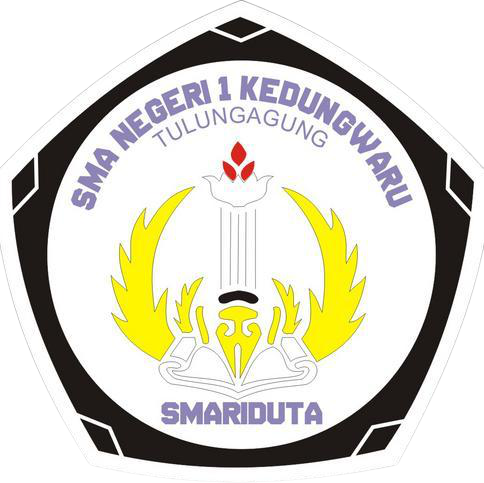

SMA NEGERI 1 KEDUNGWARU
Kabupaten Tulungagung
CHRONOS-SPHERE
Jelajah Ruang & Waktu
“Temukan bukti • Hubungkan makna • Ciptakan gagasan”
🗺️
Peta Eksplorasi
🌏
Teori Asal-Usul
🎮
Kuis Petualangan
💡
Tantangan Masa Kini
🖼️
Galeri Karya